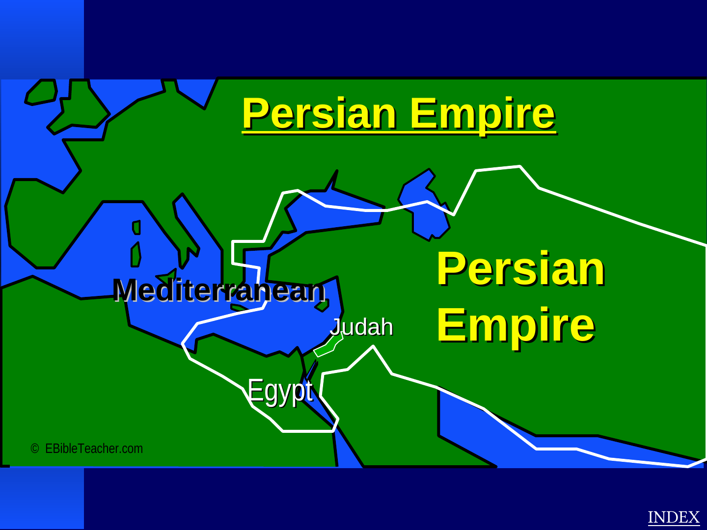

Assyrian Empire
The source connects Assyrian expansion with the northern kingdom of Israel and pressure on Judah.
2 Kings 172 Kings 18–19Isaiah
The source moves from Assyria to Babylon, Persia, Alexander's empire and Rome. This sequence helps visitors place biblical events within changing political worlds.

The source connects Assyrian expansion with the northern kingdom of Israel and pressure on Judah.
Connected with Jerusalem's fall, Judah's exile, Nebuchadnezzar, and Daniel.
The source links Persia with the return of exiles and the settings of Ezra, Nehemiah, and Esther.
The source emphasizes the spread of Greek language and culture as background to the New Testament world.
The atlas presents Rome as the political setting of Jesus' lifetime and the early Christian mission.